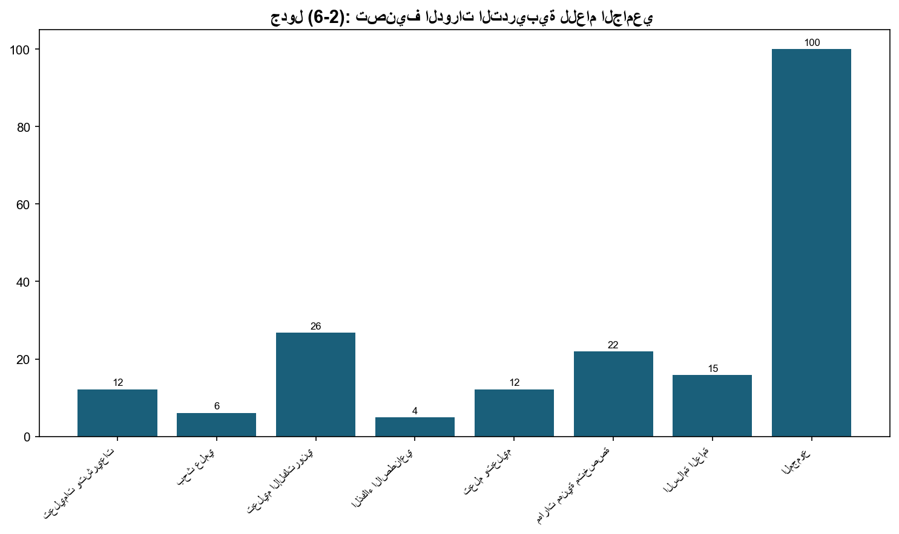
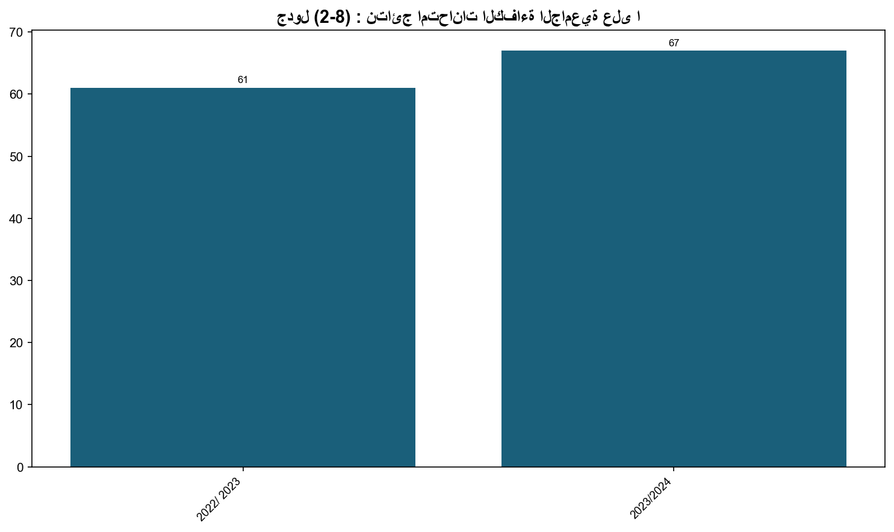

2.7: نسبة المشاركين في دورات تأهيل وتدريب أعضاء هيئة التدريس
📝 17 فقرة
📋 3 جدول
📊 2/0 شكل
يتولى مركز التطوير الأكاديمي مسؤولية توفير الدورات التدريبية، التي تعمل على رفع الكفاية المهنية لأعضاء الهيئة التدريسية والإدارية، بناءً على توجيهات الجامعة. وتربط الجامعة هذه الدورات بخططها الاستراتيجية، والتطورات الحديثة في المجالين: الأكاديمي، والإداري. وقد قام المركز -خلال العام الأكاديمي (2023/2024)- بوضع الخطة التشغيلية والميزانية التقديرية للمركز؛ إذ عُقدت (82) دورة تدريبية لأعضاء الهيئة التدريسية والإدارية، تتضمن (37) دورة تدريبية تتعلق بالطرق الحديثة في التعليم، حضرها ما مجموعه (1293) ع
ركزت الدورات التي وُجِّهت لأعضاء الهيئة التدريسية على التعلم والتعليم والتقييم والبحث العلمي باستخدام تقنيات التعليم الإلكتروني، إذ هدفت إلى تمكين أعضاء الهيئة التدريسية من تقنيات التعليم الحديثة خاصة المتعلقة بالتعلم والتعليم عن بُعد، والتعليم المدمج، وتنوعت في موضوعاتها، فبعضها كان متخصصًا في مجالات محددة لتلبية احتياجات الكليات، مثل:
كلية الحقوق: حوسبة المواد التعليمية، والتعليم المدمج، والإرشاد الأكاديمي، وPowerPoint presentation.
كلية طب الأسنان: تطبيق نظام Moodle، ودليل البرامج الأكاديمية، وحوسبة الامتحانات.
كلية تكنولوجيا المعلومات: الإرشاد الأكاديمي ومتابعة المتعثرين.
تولي الجامعة اهتمامًا خاصًا بأعضاء الهيئة التدريسية الجدد حيث يضع مركز التطوير الأكاديمي جدولاً للتدريب يمتد تنفيذه على مدار الفصل الدراسي الأول منذ بداية العام الأكاديمي. إن توزيع عقد الدورات التدريبية على مدار الفصل الدراسي يأتي بتحديد موعد عقد دورات تدريبية حسب الحاجة إلى تطبيق المحتوى التدريبي حيث يبدأ المركز بالدورات الأساسية التعريفية بإدارات الجامعة وأنظمتها المعمول بها وتعليمات الجامعة والتشريعات، وبعدها يعقد دورات متخصصة بالعملية التعليمية من مثل إعداد الخطط الدراسية للتعليم الوجاهي وال
لقاء ترحيبي بأعضاء الهيئة التدريسية الجدد والذي تضمن تعريفهم بمديري الدوائر والمراكز والوحدات والأنظمة العاملة بها.
تعليمات عضو هيئة التدريس والبحث العلمي والتدريس (تعليمات من رقم 4 إلى رقم 8) بالإضافة إلى أخلاقيات البحث العلمي.
التشريعات والسياسات ودليل أخلاقيات العمل الجامعي.
قواعد البيانات الإلكترونية المتوفرة في الجامعة التي يمكن استخدامها لغايات التدريس والبحث العلمي.
منصات التعليم الإلكتروني والتي تضمنت تدريبًا على منصة Moodle وBlackboard وMicrosoft Teams وMicrosoft OneDrive، والتي تُستخدم للتعليم المدمج والإلكتروني والامتحانات المحوسبة وواجبات الطلبة.
التدريس الجامعي وتضمن التدريب على إعداد الخطط الدراسية للتدريس الوجاهي والمدمج والإلكتروني من حيث صياغة المخرجات التعليمية وربط موضوعات التدريس والامتحانات فيها. كما تضمن التعريف بدليل إجراءات البرامج الأكاديمية من حيث إعداد الملف لكل مساق دراسي كمتطلب لضمان الجودة. كما تضمن التدريب على منهجيات التعليم الإلكتروني والأدوات التي يمكن أن تُستخدم لزيادة تفاعل الطلبة مع المساقات الإلكترونية والمدمجة من مثل H5P، وInstructional design for online setting، وأدوات الذكاء الاصطناعي.
البحث العلمي: تناولت الدورات المتخصصة بالبحث العلمي التعليمات والإجراءات المتعلقة بالبحث العلمي والترقية والخدمات الإلكترونية المتوفرة لغايات البحث العلمي.
نتائج امتحانات الكفاءة الجامعية
يُلاحظ من النتائج الواردة في الجدول للعام الجامعي 2023/2024 أن متوسط نسب أداء طلبة جامعة البترا كان أعلى من مستوى القطع بمقدار 3.68% في الفصل الدراسي الأول، وأعلى بمقدار 1.68% في الفصل الثاني. كما أن نسبة الطلبة الذين حصلوا على علامة 50 فأكثر بلغت 67% في الفصل الدراسي الأول وهي أعلى من النسب التي حققها الطلبة في العام الدراسي السابق بفوارق تتراوح ما بين 6-9%.
المعيار الثالث : البحث العلمي
يشكل البحث العلمي والدراسات العليا ركنًا أساسيًا من أنشطة الجامعة. لذا، تم إنشاء عمادة خاصة، يدير شؤونها عميد البحث العلمي والدراسات العليا، ويساعده مجلس البحث العلمي، ومجلس الدراسات العليا، اللذان شكلهما مجلس العمداء، ويمكن إجمال ما قامت به عمادة البحث العلمي والدراسات العليا بمجالسها، ولجانها، خلال العام الجامعي 2023/2024 من خلال الآتي:


جدول (6-2): تصنيف الدورات التدريبية للعام الجامعي 2023/2024.
📊 8 صف من البيانات
| مجال الدورة | عدد الدورات المنعقدة | النسبة من الدورات |
|---|---|---|
| تعليمات وتشريعات | 10 | 12.2% |
| بحث علمي | 5 | 6.1% |
| تعليم الإلكتروني | 22 | 26.8% |
| الذكاء الاصطناعي | 4 | 4.9% |
| تعلم وتعليم | 10 | 12.2% |
| مهارات مهنية متخصصة | 18 | 22% |
| السلامة العامة | 13 | 15.8% |
| المجموع | 82 | 100% |
جدول (7-2): الدورات التدريبية التي عقدها مركز التطوير الأكاديمي لأعضاء الهيئة التدريسية والإدارية وع
📊 83 صف من البيانات
| الرقم | الموضوع | تاريخ عقد الدورة | تاريخ عقد الدورة | المدرب | المكان | عدد ساعات التدريب | عدد الحضور |
|---|---|---|---|---|---|---|---|
| التعريف بإدارات الجامعة وأنظمتها المختلفة | 11/9/2023 | 11/9/2023 | مدراء الدوائر والمراكز والوحدات | قاعة مروان الدحلة/المكتبة | ساعة | 31 | |
| تعليمات الهيئة التدريسية | 11/9/2023 | 11/9/2023 | السيدة وفاء الخطيب | قاعة مروان الدحلة/المكتبة | ساعة | 16 | |
| التعليم الالكتروني | 11/9/2023 | 11/9/2023 | م. أحمد الشتيات | قاعة مروان الدحلة/المكتبة | ساعة | 16 | |
| تعليم اللغات | 11/9/2023 | 11/9/2023 | د. علا الدباغ | قاعة مروان الدحلة/المكتبة | ساعة | 16 | |
| معايير الجودة | 11/9/2023 | 11/9/2023 | د. أحمد القاسم | قاعة مروان الدحلة/المكتبة | ساعة | 16 | |
| تعليمات البحث العلمي | 12/9/2023 | 12/9/2023 | أ.د. فيصل أبو الرب | قاعة مروان الدحلة/المكتبة | ساعة | 16 | |
| تعليمات الباحث المتميز | 12/9/2023 | 12/9/2023 | أ.د. فيصل أبو الرب | قاعة مروان الدحلة/المكتبة | ساعة | 16 | |
| تعليمات المدرس المتميز | 12/9/2023 | 12/9/2023 | أ.د. فيصل أبو الرب | قاعة مروان الدحلة/المكتبة | ساعة | 16 | |
| التشريعات والسياسات ودليل اخلاقيات العمل الجامعي | 12/9/2023 | 12/9/2023 | د. كنزا منصور | قاعة مروان الدحلة/المكتبة | ساعة | 16 | |
| تقييم أداء أعضاء الهيئة التدريسية | 12/9/2023 | 12/9/2023 | د. أحمد القاسم | قاعة مروان الدحلة/المكتبة | ساعة | 16 | |
| الموقع الالكتروني لعضو هيئة التدريس | 17/9/2023 | 17/9/2023 | إسراء حياصات | المكتبة الإلكترونية | ساعة | 16 | |
| تعليمات المكتبة وخدماتها الورقية والإلكترونية | 17/9/2023 | 17/9/2023 | السيدة منار رمضان | المكتبة الإلكترونية | ساعة | 16 | |
| قواعد البيانات الالكترونية | 17/9/2023 | 17/9/2023 | السيد حمزة المومني | المكتبة الإلكترونية | ساعة | 16 | |
| أيقونة التعليم الالكتروني | 17/9/2023 | 17/9/2023 | أ.د. نهى الخليلي د. أحمد القاسم | نادي الجامعة | ساعتان | 129 | |
| Primavera-6 لكادر كلية الهندسة | شركة الرجاء للتدريب | شركة الرجاء للتدريب | شركة الرجاء للتدريب | كلية الهندسة مختبر 2309 | 30 ساعة | 9 | |
| الإرشاد الأكاديمي | د. ناصر الجمل | د. ناصر الجمل | د. ناصر الجمل | نادي الجامعة | 3 ساعات | 14 | |
| قاعدة بيانات المنهل لكادر المكتبة | مدرب من خارج الجامعة | مدرب من خارج الجامعة | مدرب من خارج الجامعة | المكتبة الالكترونية | ساعتان | 11 | |
| برمجية "ادج" | المجلس الأردني للأبنية الخضراء | المجلس الأردني للأبنية الخضراء | المجلس الأردني للأبنية الخضراء | المجلس الأردني للأبنية الخضراء | 8 | 2 | |
| ميكروسوفت تيمز | د. خليل عمر | د. خليل عمر | د. خليل عمر | ميكروسوفت تيمز | 3 ساعات | 12 | |
| نظام الموديل | م. محمد نظمي الشيخ م. أحمد الشتيات | م. محمد نظمي الشيخ م. أحمد الشتيات | م. محمد نظمي الشيخ م. أحمد الشتيات | ميكروسوفت تيمز | 6 ساعات | 12 | |
| متطلبات التعليم الالكتروني لكلية الآداب والعلوم | د. نهى الخليلي م. أحمد الشتيات م. حسين المؤقت | د. نهى الخليلي م. أحمد الشتيات م. حسين المؤقت | د. نهى الخليلي م. أحمد الشتيات م. حسين المؤقت | ميكروسوفت تيمز | 3 ساعات | 44 | |
| نظام Blackboard | م. حسين المؤقت | م. حسين المؤقت | م. حسين المؤقت | مختبر 9420 –كلية العلوم الإدارية والمالية | 6 ساعات | 19 | |
| منهجيات التعليم الإلكتروني | م. عز الدين مطر | م. عز الدين مطر | م. عز الدين مطر | ميكروسوفت تيمز | 3 ساعات | 14 | |
| Microsoft One Drive | م. أحمد الشتيات | م. أحمد الشتيات | م. أحمد الشتيات | ميكروسوفت تيمز | ساعتان | 10 | |
| إعداد الخطة الدراسية | د. نهيل الجابري | د. نهيل الجابري | د. نهيل الجابري | نادي الجامعة | 3 ساعات | 18 | |
| إعداد الخطة الدراسية للتعليم المدمج والإلكتروني | د. نهيل الجابري | د. نهيل الجابري | د. نهيل الجابري | مختبر الوسائل التعليمية/ كلية الآداب والعلوم | 3 ساعات | 17 | |
| أيقونة التعليم الالكتروني والمدمج لكلية الاعلام | ا. د. نهى الخليلي د. أحمد القاسم م. أحمد الشتيات م. حسين المؤقت | ا. د. نهى الخليلي د. أحمد القاسم م. أحمد الشتيات م. حسين المؤقت | ا. د. نهى الخليلي د. أحمد القاسم م. أحمد الشتيات م. حسين المؤقت | ميكروسوفت تيمز | ساعتان | 10 | |
| Instructional Design for online setting workshop | م. عز الدين مطر | م. عز الدين مطر | م. عز الدين مطر | ميكروسوفت تيمز | 15 ساعة | 16 | |
| المحادثة باللغة الإنجليزية المستوى المتوسط | ندين عريقات | ندين عريقات | ندين عريقات | الموقع العلاج اللغوي كلية الآداب والعلوم | 10 ساعات | 9 | |
| حوسبة المواد التعليمية لكلية الحقوق | م. أحمد الشتيات | م. أحمد الشتيات | م. أحمد الشتيات | مختبر 3410- كلية الحقوق | ساعتان | 12 | |
| الإسعافات الأولية -المجموعة الأولى- امن الجامعة | د. فؤاد هماش د. دينا قرشاي | د. فؤاد هماش د. دينا قرشاي | د. فؤاد هماش د. دينا قرشاي | قاعة رقم 2 عمادة شؤون الطلبة | ساعتان | 10 | |
| الإسعافات الأولية -المجموعة الثانية- امن الجامعة | د. فؤاد هماش د. دينا قرشاي | د. فؤاد هماش د. دينا قرشاي | د. فؤاد هماش د. دينا قرشاي | قاعة رقم 2 عمادة شؤون الطلبة | ساعتان | 10 | |
| التعليم المدمج لكلية الحقوق | م. عز الدين مطر | م. عز الدين مطر | م. عز الدين مطر | مختبر 3410 كلية الحقوق | 4 ساعات | 11 | |
| الإسعافات الأولية -المجموعة الثالثة- امن الجامعة | د. فؤاد هماش د. دينا قرشاي | د. فؤاد هماش د. دينا قرشاي | د. فؤاد هماش د. دينا قرشاي | قاعة رقم 2 عمادة شؤون الطلبة | ساعتان | 9 | |
| الإنقاذ والإطفاء- المجموعة الأولى- أمن الجامعة | مصطفى الخوالدة | مصطفى الخوالدة | مصطفى الخوالدة | قاعة رقم 2 عمادة شؤون الطلبة | ساعتان | 10 | |
| Power Point Presentation لكلية الحقوق | م. عز الدين مطر | م. عز الدين مطر | م. عز الدين مطر | مختبر 3410 كلية الحقوق | 4 ساعات | 10 | |
| الإنقاذ والإطفاء- المجموعة الثانية- أمن الجامعة | مصطفى الخوالدة | مصطفى الخوالدة | مصطفى الخوالدة | قاعة رقم 2 عمادة شؤون الطلبة | ساعتان | 9 | |
| الإنقاذ والإطفاء- المجموعة الثالثة- أمن الجامعة | مصطفى الخوالدة | مصطفى الخوالدة | مصطفى الخوالدة | قاعة رقم 2 عمادة شؤون الطلبة | ساعتان | 10 | |
| استراتيجيات التعليم المتمايز | د. طارق رشيد | د. طارق رشيد | د. طارق رشيد | نادي الجامعة | 12 ساعة | 30 | |
| H5P | م. أحمد الشتيات السيد عمر السيد | م. أحمد الشتيات السيد عمر السيد | م. أحمد الشتيات السيد عمر السيد | ميكروسوفت تيمز | 10 ساعات | 11 | |
| التوعية بالأمن السيبراني | د. ضحى الصمادي د. علي المقوسي | د. ضحى الصمادي د. علي المقوسي | د. ضحى الصمادي د. علي المقوسي | مختبر 7323 تكنولوجيا المعلومات | 6 ساعات | 9 | |
| اداري ابتكاري معتمد- المستوى الثاني | مركز الملك عبد الله الثاني للتميز | مركز الملك عبد الله الثاني للتميز | مركز الملك عبد الله الثاني للتميز | عبر زووم | 3 ساعات | 3 | |
| مراجعة لتطبيق بلاك بورد لكلية طب الاسنان | م. حسين المؤقت | م. حسين المؤقت | م. حسين المؤقت | مختبر كلية طب الاسنان | 3 ساعات | 6 | |
| مراجعة لتطبيق نظام الموديل لكلية طب الاسنان | م. أحمد الشتيات السيد عمر السيد | م. أحمد الشتيات السيد عمر السيد | م. أحمد الشتيات السيد عمر السيد | مختبر كلية طب الاسنان | 3 ساعات | 7 | |
| اهداف التنمية المستدامة ودمجها في العملية الأكاديمية | م. روان خطاب | م. روان خطاب | م. روان خطاب | نادي الجامعة | ساعتان | 39 | |
| الإخلاء لكلية تكنولوجيا المعلومات | مصطفى الخوالدة | مصطفى الخوالدة | مصطفى الخوالدة | مختبرات كلية تكنولوجيا المعلومات | ساعة | 23 | |
| Instructional Design for online setting | م. عز الدين مطر | م. عز الدين مطر | م. عز الدين مطر | مختبر كلية طب الاسنان | 3 ساعات | 6 | |
| الإخلاء لكلية الإعلام | مصطفى الخوالدة | مصطفى الخوالدة | مصطفى الخوالدة | كلية الإعلام قاعة 3309 | ساعة | 19 | |
| الإخلاء لكلية الحقوق | مصطفى الخوالدة | مصطفى الخوالدة | مصطفى الخوالدة | كلية الإعلام قاعة 3309 | ساعة | 15 | |
| دليل البرامج الأكاديمية | د. نهيل الجابري | د. نهيل الجابري | د. نهيل الجابري | مختبر كلية طب الاسنان | 3 ساعات | 6 | |
| الإخلاء/ كلية الهندسة | مصطفى الخوالدة | مصطفى الخوالدة | مصطفى الخوالدة | كلية الهندسة | ساعة | 10 | |
| الإخلاء/ الرئاسة | د. لؤي أبو قطوسة مصطفى الخوالدة | د. لؤي أبو قطوسة مصطفى الخوالدة | د. لؤي أبو قطوسة مصطفى الخوالدة | الرئاسة | ساعة | 23 | |
| محادثة باللغة الإنجليزية- المستوى المتقدم | ندين عريقات/ منحة فولبرايت | ندين عريقات/ منحة فولبرايت | ندين عريقات/ منحة فولبرايت | الموقع العلاج اللغوي في كلية الآداب والعلوم/ الطابق الثاني | 10 ساعات | 5 | |
| الارشاد الأكاديمي لكلية الحقوق | د. ناصر الجمل | د. ناصر الجمل | د. ناصر الجمل | مختبر كلية الحقوق | ساعتان | 12 | |
| تحسين الخط العربي (فن الكتابة وخط الرقعة) | باسمة حسين/ أكاديمية الخط العربي | باسمة حسين/ أكاديمية الخط العربي | باسمة حسين/ أكاديمية الخط العربي | نادي الجامعة | 12 ساعة | 15 | |
| دليل عملي في توظيف ادوات الذكاء الاصطناعي في المجال الأكاديمي | د. محمد عرفة | د. محمد عرفة | د. محمد عرفة | المكتبة/ مختبر 2107 | 20 ساعة | 18 | |
| فرق العمل الناجحة ومهارات الاتصال والتواصل | د. طارق رشيد | د. طارق رشيد | د. طارق رشيد | ميكروسوفت تيمز | 12 ساعة | 14 | |
| Microsoft Power B.I | د. أنس كنعان | د. أنس كنعان | د. أنس كنعان | مختبر 9216/ كلية العلوم الإدارية والمالية | 15 ساعة | 23 | |
| دورة التعامل مع أجهزة اللاسلكي/أمن الجامعة | جهاد سنيان | جهاد سنيان | جهاد سنيان | عمادة شؤون الطلبة/ قاعة تدريب 1 | 4 ساعات | 15 | |
| دورة التعامل مع أجهزة اللاسلكي/أمن الجامعة | جهاد سنيان | جهاد سنيان | جهاد سنيان | عمادة شؤون الطلبة/ قاعة تدريب 1 | 4 ساعات | 15 | |
| المحاضرة التعريفية لبرنامج الهيئة الألمانية للتبادل العلمي | DAAD | DAAD | DAAD | مسرح الدراسات الدوائية | ساعة | 57 | |
| الإطفاء لكلية طب الاسنان | د. لؤي أبو قطوسة مصطفى الخوالدة | د. لؤي أبو قطوسة مصطفى الخوالدة | د. لؤي أبو قطوسة مصطفى الخوالدة | كلية طب الاسنان A24222 | ساعة | 13 | |
| الإخلاء لكلية طب الاسنان | د. لؤي أبو قطوسة مصطفى الخوالدة | د. لؤي أبو قطوسة مصطفى الخوالدة | د. لؤي أبو قطوسة مصطفى الخوالدة | كلية طب الاسنان A24222 | ساعة | 13 | |
| حوسبة الامتحانات لأعضاء الهيئة التدريسية/ كلية طب الاسنان | أ.د. وائل هادي السيد عمر السيد | أ.د. وائل هادي السيد عمر السيد | أ.د. وائل هادي السيد عمر السيد | كلية طب الاسنان A24222 | 4 ساعات | 9 | |
| دورة Word-Basic لمشرفات سكن الطالبات | د. خليل عمر | د. خليل عمر | د. خليل عمر | ميكروسوفت تيمز | 6 ساعات | 8 | |
| دورة Word-Advanced لمشرفات سكن الطالبات | د. خليل عمر | د. خليل عمر | د. خليل عمر | ميكروسوفت تيمز | 10 ساعات | 10 | |
| دورة Excel-Basic لمشرفات سكن الطالبات | د. خليل عمر | د. خليل عمر | د. خليل عمر | ميكروسوفت تيمز | 6 ساعات | 11 | |
| الذكاء الاصطناعي دورة تأسيسية | د. محمد عرفة | د. محمد عرفة | د. محمد عرفة | مختبر 2107 | 10 ساعات | 25 | |
| الذكاء الاصطناعي دورة تأسيسية | د. محمد عرفة | د. محمد عرفة | د. محمد عرفة | مختبر 2107 | 10 ساعات | 32 | |
| دورة Excel -Advanced لمشرفات سكن الطالبات | د. خليل عمر | د. خليل عمر | د. خليل عمر | ميكروسوفت تيمز | 10 ساعات | 13 | |
| الورشة الأردنية الثالثة عشر لمستخدمي ضوء السنكروترون | جامعة الأميرة سمية للتكنلوجيا | جامعة الأميرة سمية للتكنلوجيا | جامعة الأميرة سمية للتكنلوجيا | جامعة الأميرة سمية للتكنلوجيا | 8 | 2 | |
| أكاديمية التربية الإعلامية | معهد الإعلام الأردني | معهد الإعلام الأردني | معهد الإعلام الأردني | معهد الإعلام الأردني | 1 | ||
| CDMP In-House Training | Morgan International | Morgan International | Morgan International | Online training | 42 | 3 | |
| إعداد ملف المادة | د. نهيل الجابري | د. نهيل الجابري | د. نهيل الجابري | مختبر الوسائل التعليمية | 3 ساعات | 10 | |
| Soft skills | مكتب المساواة والاستدامة | مكتب المساواة والاستدامة | مكتب المساواة والاستدامة | منصة موديل | 10 ساعات | 12 | |
| Digital skills | مكتب المساواة والاستدامة | مكتب المساواة والاستدامة | مكتب المساواة والاستدامة | منصة موديل | 10 ساعات | 10 | |
| Python- لغة برمجة في الذكاء الاصطناعي | د. محمد عرفة | د. محمد عرفة | د. محمد عرفة | مختبر رقم 7428 كلية تكنولوجيا المعلومات | 20 ساعة | 12 | |
| الارشاد الأكاديمي ومتابعة المتعثرين | د. ناصر الجمل | د. ناصر الجمل | د. ناصر الجمل | قاعة اجتماعات كلية تكنولوجيا المعلومات | 3 | 16 | |
| إدارة الغرفة الصفية | د. مرام أبو النادي | د. مرام أبو النادي | د. مرام أبو النادي | نادي الجامعة | 6 ساعات | 18 | |
| مهارات الاتصال وخدمة الجمهور/ أمن الجامعة- المجموعة الأولى | تولين زلاطيمو | تولين زلاطيمو | تولين زلاطيمو | قاعة التدريب في عمادة شؤون الطلبة | 10 ساعات | 13 | |
| مهارات الاتصال وخدمة الجمهور/ أمن الجامعة- المجموعة الثانية | تولين زلاطيمو | تولين زلاطيمو | تولين زلاطيمو | قاعة التدريب في عمادة شؤون الطلبة | 10 ساعات | 14 | |
| دورة تدريبية على جهاز Rheometer | غادة سويدان / شركة | غادة سويدان / شركة | غادة سويدان / شركة | مركز الدراسات الدوائية | 12 ساعة | 7 | |
| المجموع | 1293 |
جدول (2-8) : نتائج امتحانات الكفاءة الجامعية على المستوى العام والدقيق للعام الجامعي 2023/2024.
📊 4 صف من البيانات
| العام الجامعي | الفصل | نسب اداء طلبة البترا على المحور العام | نسب اداء طلبة البتراعلى المحور الدقيق | نسب اداء طلبة البترا على العام والدقيق | نسبة الطلبة الذين حصلوا على علامة 50 فما فوق | حد الاتقان المطلوب لنسب الاداء العام والدقيق | |
|---|---|---|---|---|---|---|---|
| 2022/ 2023 | الفصل الاول | 58.43% | 47.35% | 52.89% | 58% | 55% | |
| 2022/ 2023 | الفصل الثاني | - | - | 60% | 61% | 50% | متقن |
| 2023/2024 | الفصل الاول | - | - | 53.68% | 67% | 50% | متقن |
| الفصل الثاني | - | - | 51.68% | 56% | 50% | متقن |